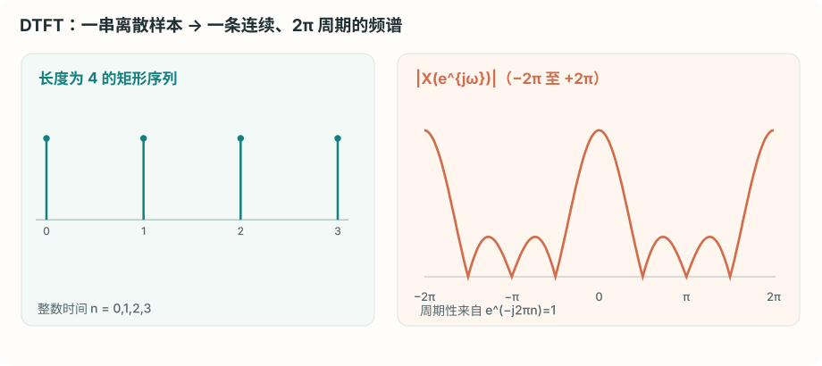
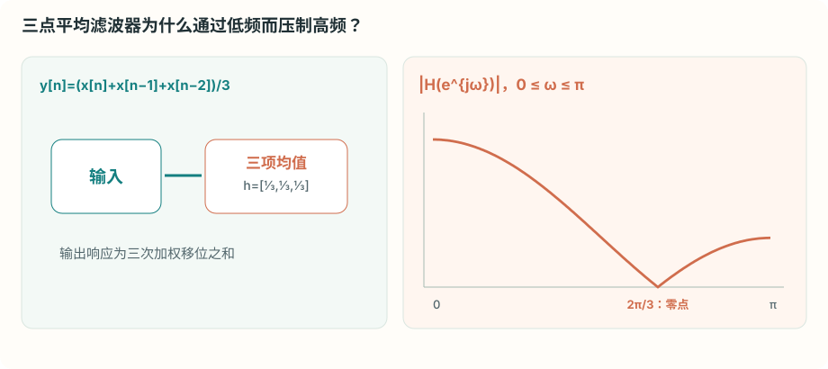

Signal · System · Insight / 06
DTFT：离散时间为什么对应连续频谱？
建立数字角频率、连续频谱、2π 周期性和 LTI 频率响应之间的因果关系。
同样只有四个样本，为什么频谱是一条连续曲线？
信号 x[n]=[1,1,1,1] 只有四个非零样本，计算机却能为每个实数角频率 ω 计算一个复数频谱值。这里并没有添加新的时间数据：离散时间傅里叶变换 DTFT 是有限或无限序列关于连续频率参数的函数；与下一章的有限点 DFT 不同，它并不只定义在有限个 k 上。
数字频率 ω 的单位是 rad/sample。若真实采样率 fₛ 已知，物理频率对应 f=ωfₛ/(2π)，但 DTFT 定义本身不必先知道采样率。本文先建立 DTFT 的代数与几何意义，再把它应用到一个能手算的均值滤波器上。
从复指数投影得到 DTFT
把序列的每个样本乘以复指数 e^(−jωn) 并对整数时间求和，可以检测其在频率 ω 上的复振幅。该和的绝对可和性是 DTFT 存在的一个简单充分条件，但不是唯一存在方式；例如有限能量序列可通过平方可积意义定义频谱。
式（1）：此处采用正变换指数为负号、反变换指数为正号的约定。
因 n 是整数，e^(−j(ω+2π)n)=e^(−jωn)。所以 DTFT 关于 ω 必定 2π 周期，而不是“采样后频率只到 π，所以频谱在 π 截断”。实值序列还满足共轭对称：X(e^(−jω))=conj(X(e^(jω)))；幅度为偶函数，复谱的相位需要妥善处理跳变和零点。

反 DTFT 与 Z 变换的单位圆
既然 DTFT 的频率变量连续，怎样回到第 n 个样本？反变换把一个周期内所有复频率分量积分并按 1/(2π) 归一化。只需对任意完整的 2π 区间积分一次，其他区间重复了同样的信息。
式（2）：在相应可积性与重建条件下成立。
第五章的双边 Z 变换用 X(z)=Σx[n]z^(−n) 扩展了这个思路。当 Z 变换的收敛域包含单位圆时，取 z=e^(jω) 就可以得到同一序列的 DTFT。仅将代数式代入单位圆，不自动证明原级数在单位圆上收敛。
频率响应怎样把卷积变成乘法？
对零状态 LTI 系统，输出 y[n]=(x*h)[n]。在变换和乘积有意义的前提下，时域卷积对应频域相乘：Y(e^(jω))=X(e^(jω))H(e^(jω))。因此，输入的某一复指数频率分量只被系统乘以复增益 H，而不会凭空改成另一个频率。
考虑三点移动平均 h=[1/3,1/3,1/3]。DC 输入每个样本都相同，输出均值保持不变，所以 H(0)=1；而在 ω=2π/3，三根单位复向量恰好相互抵消，得到零点。
式（3）：实系数对称 FIR 的线性相位对应一个固定延迟；在幅度为零的点相位没有定义。

能量定理与哪些说法需要限定？
对于有限能量序列，Parseval 关系保证时域样本模方平方和等于一个完整周期内频谱模方的积分，前提是归一化一致。不能简单省略积分系数，也不能把频谱的模长和直接当作样本的总能量。
式（4）：等式按 L² 能量意义使用；不适合直接替代无穷能量周期正弦的平均功率计算。
还有一个边界：时间有限不等于频带有限。矩形脉冲的频谱有旁瓣；改变窗口端点会改变频谱泄漏。下一章通过有限点 DFT 观察这一效应。
动手改变滑动平均长度
可交互推演：平均窗口长度 M（样本数）
图为确定性计算，不是测量值。无脚本时仍能从上文的公式和静态图理解结论。
调大 M，首个零点会向低频移动，显示平均滤波器的频率选择性在改变。但主瓣变窄的同时，滤波延迟与瞬态响应也随之变化。滑块不是设计指标的自动优化器。
from math import pi, cos, sin
def dtft(h,omega):
return sum(v*complex(cos(-omega*n),sin(-omega*n))
for n,v in enumerate(h))
h=[1/3]*3
assert abs(dtft(h,0)-1)<1e-12
assert abs(dtft(h,2*pi/3))<1e-12
assert abs(abs(dtft(h,pi))-1/3)<1e-12完整程序：examples/06_dtft.py，运行 python examples/06_dtft.py。测试同时给出了数据与误差容差，不依赖外部包。
频域思维的边界与自检
- 绝对可和是点态 DTFT 存在的充分条件，不是所有广义谱的必要条件。
- ω 的单位是 rad/sample，f 的单位是 Hz；频率轴不能在没有采样率时直接互换。
- 群延迟与相位需要在响应非零、相位分支适当连续的区间讨论。
- DTFT 的连续频率坐标不意味着可以在计算机中无限精度采样所有频率。
自检：对二点平均 h=[1/2,1/2]，计算 H(0)、H(π) 与群延迟；说明这与三点均值相比零点位置为何不同。
来源与可进一步验证的范围
- MIT OCW · Digital Signal Processing：离散时间频率分析与 LTI 背景。
- MIT OCW · Discrete-Time Signal Processing：DTFT、DFT、窗函数与 FFT 理论资料。
- SciPy · Fourier 变换指南：DFT/FFT 惯例、复频谱与计算实例。